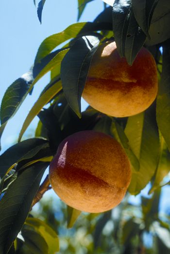

Most fruit trees are best grown from grafted trees that cost $25 to $35 each. But with peaches, nectarines and apricots, you can cut your cost to zero by growing trees from seeds.
Because cross-pollination between varieties produces variable results, apples and some other fruit trees are usually not grown from seeds. (Instead, cuttings or buds of the best varieties are grafted onto rootstocks to produce trees that bear fruit just like the parent tree’s.) But the almondlike seeds in pits from peaches, nectarines and apricots do a good job of carrying on the desirable traits of their parents. You can simply sprout and grow a seed from a great-tasting specimen, and you have a good chance of sinking your teeth into sweet, juicy fruit from your own tree in only three to five years.
Summer is the best time to kick off this project, because you can seek out mid- or late-season varieties grown in your region. The best seeds come from fully ripe fruit. Avoid seeds from early maturing varieties because their seeds may not develop enough to sprout. Locally grown varieties are more likely to prosper in your garden compared to varieties grown a thousand miles away, and looking for likely candidates is tasty fun! Eat lots of peaches from farm stands and farmers markets, and save the pits from those that taste like peach heaven. And if you live where you can get local apricots and nectarines, you can try growing them from seeds too.
Let the pits dry on your kitchen counter for a few days. Drying allows the seed inside the shell to shrink slightly so it’s easier to get out. The shell also becomes more brittle and easier to crack as it dries.
When the pits look and feel dry, you can crack them open to harvest the actual seeds, which look like almonds, a close botanical cousin. You can hold pits on edge and tap them with a hammer, which works well for a few pits but can cause high casualties in terms of accidentally smashed seeds (and fingers). You will lose far fewer seeds by cracking the pits with a vise, lodging both sides of the pit’s long seams between the opposing jaws. (See photo in the Image Gallery.) Crank the vise closed slowly - be careful for your fingers! - until the pit cracks.
If you don’t have a vise, try a nut cracker. Or you might get enough pit-cracking compression from another type of screw clamp, including the one that holds your food grinder, juicer or hand-cranked grain mill to your kitchen counter - you never know until you try! After you get the seeds out, put them in a closed container in your refrigerator or other place cool enough to store raw nuts.
The time for vegetables and flowers to sprout from seeds to transplants is measured in days or weeks, but with peaches and most other temperate-zone tree fruits, the pregermination process adds two to three months to the timetable. Natural sprouting inhibitors present in the seeds must be deactivated by exposure to cool temperatures for a two- to three-month period. In nature, this chilling period occurs naturally as winter cold comes, fluctuates and invariably leads to spring.
To trick seeds into sprouting when you want (usually early spring), use a method called stratification - a nursery term that basically means exposing seeds to cool, moist conditions. You can simply plant them in pots and bury the pots in a corner of the garden. Seeds that are not discovered by marauding squirrels, curious dogs or other vagaries of the great outdoors will probably sprout in spring. If you’d rather not take chances, your refrigerator will make a perfectly satisfactory stratification chamber because ideal stratification temperatures range between 32 and 45 degrees Fahrenheit. To help your seedlings hit their best growing schedule, start the chilling period about four months before your last spring frost date. Varieties from warmer regions often require a shorter chilling period.
To start the process, soak the seeds in room temperature water overnight, then pop them into a jar of slightly moist potting soil. Close the jar and put it in a not-too-distant corner of your refrigerator where it won’t get frozen or forgotten.
Begin checking the contents of the jar after about a month. It never ceases to amaze me how almost all the seeds sprout (as if a switch had been turned on) after they’ve spent enough time being cool and moist. Depending on the particular seed, that time might vary from one to three months (apricots take only four to six weeks), but after the chilling requirements for those particular seeds are satisfied, they’re ready to grow. When you check the jars, the fat, white rootlets will stand out visually against the darker potting soil.
Now you have to do something with those young sprouts, which are eager to get on with the business of growing. If it’s still freezing outdoors, keep the sprouting seeds in the refrigerator a bit longer. A month or so before your last frost date, either pot the sprouts or plant them where you want them to grow. Keeping the seedlings in containers for a couple of months makes monitoring their progress easy. Waxed paper milk cartons with drainage holes punched near the bottoms work well, because when it’s time to plant, you can merely cut away the cartons to minimize any root disturbance.
The better the growing conditions, the sooner your tree will bear fruit. Good growing conditions for peaches and their kin mean fertile, well-drained soil with a near neutral pH. If you must plant where the soil tends to stay wet after rains, haul in some well drained soil and build up a 3-foot wide mound at least a foot high for each little plant. Mix in lime if a soil test shows the pH is too low.
Pruning will delay bearing, so trim your seedling trees only to remove dead, diseased or broken stems, as well as those that grow low on the trunk or are crowding others. Most seedling peach trees will grow to 20 feet or so, while apricots typically grow 12 to 15 feet with annual pruning. Pay attention to weeds, water and nutrition. An organic mulch such as compost, leaf mold, leaves or straw goes a long way toward taking care of all three needs. Create a circle of mulch over the root zone that’s a couple inches deep and 3 feet or more in diameter. Keep the mulch a few inches from the trunk to avoid rot and rodent damage. A better solution for keeping rodents at bay is to surround the trunk with a cylinder of quarter-inch mesh hardware cloth. Various insect borers can be deterred by wrapping the trunks with scraps of garden row cover to prevent them from laying eggs in bark crevices.
Peaches self-sow so easily that naturalized peach groves became extensive in America not long after peaches were introduced. Early botanists assumed peaches were native to this part of the world, though their origin has since been traced to China. Sow a few peach pits around your homestead, and before you know it you’ll have a lovely tree that covers itself with beautiful pink blossoms every spring, and homegrown, tree-ripened fruit with flavor to die for.
|
WILLIAM D. ADAMS You can grow delicious peaches on your own trees that you start from seeds. |
WILLIAM D. ADAMS Picking homegrown peaches makes summer sweeter! |
WILLIAM D. ADAMS ‘Sungold’ nectarines. |
|
 WILLIAM D. ADAMS ‘Tropic Snow’ peaches. |
LEE REICH The best way to break the shell that houses the actual peach seed is to use a vise. |
WILLIAM D. ADAMS To grow your own peaches, find tasty local varieties and plant their seeds. |